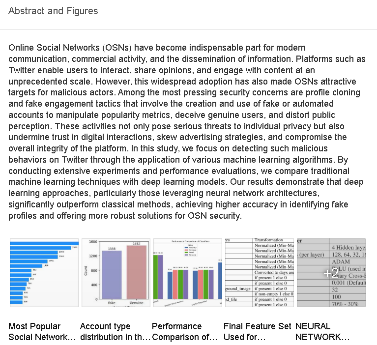

Saptak Sil
I am a Ph.D. student in Computer Science at the Indian Institute of Technology Kharagpur, where I work on 3D computer vision and machine learning.
I am advised by Prof. Ayan Chaudhury.
My current research focuses on part-level segmentation of 3D plant point clouds using self-supervised representation learning, probabilistic clustering and prototype-based matching.
I am broadly interested in 3D vision, machine learning and artificial intelligence.
Publications / Projects

Fake Profile Detection on Online Social Networks Using Machine Learning
Published in JoCAAA
This work studies fake profile detection on online social networks using machine learning and deep learning techniques. The method compares multiple models for identifying suspicious or malicious user profiles in online social networking platforms.